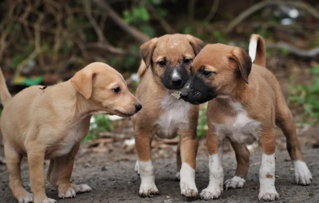
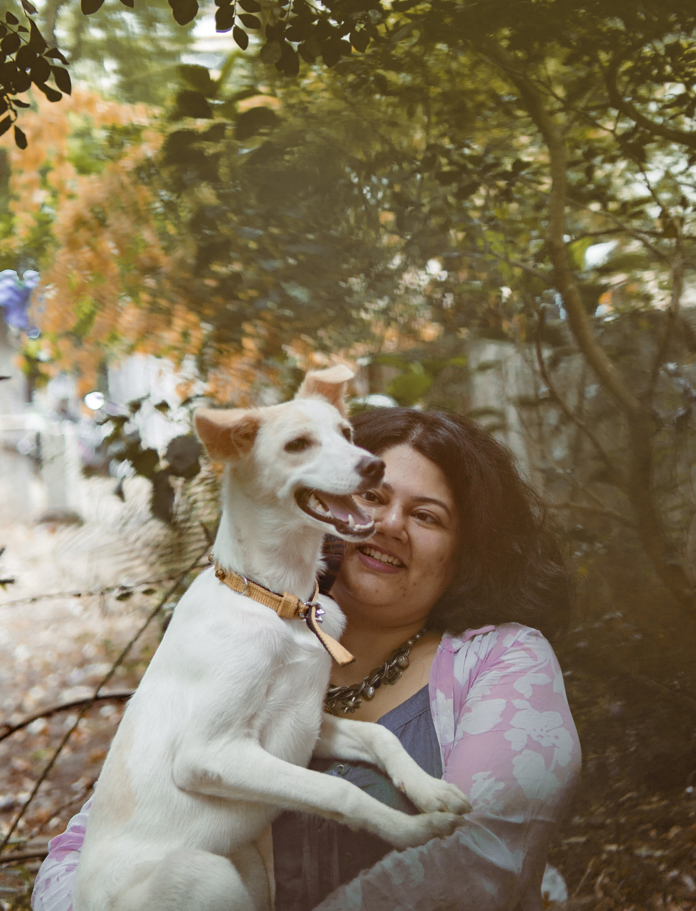

Why Adopt an Indie Dog?
Indie dogs are resilient, loving, and uniquely suited to our climate. Here's why adoption changes lives.
Read more →We build a compassionate community where companion animals—especially Indie dogs—are rescued, fostered, and given forever homes. Their treatment reflects the consciousness of our society.
Guided by compassion and respect for all sentient beings
"To create a culture where animals, especially companion animals, are seen, valued and treated as the sacred, sentient and magical beings they are. Their treatment reflects the consciousness of our society."
Rescue, foster, adopt, and advocate for animal welfare
We rescue street puppies and dogs, provide medical care, and place them in loving foster homes until they find their forever family.
We promote adoption of Indie dogs and match adopters with rescued animals through a careful, caring process.
We run awareness campaigns, share animal care tips, and advocate for policy and community change.
We build a network of volunteers, adopters, and supporters who believe in a kinder world for animals.
Together we are making a difference
Puppies Rescued
Community Members
Advocacy Campaigns
Malvika Vazalwar — A lifetime of love for animals

Founder & Animal Welfare Advocate
Malvika was raised on animal-centric movies by her grandmother—"Azaadi Ki Aur" and "Born Free" were among the first films she watched, shaping her love for animals. Her first rescue was a chick she adopted as a child.
During the COVID lockdown she rescued and fostered 16 street puppies and began initiatives including adoption interest forms, thrift fundraisers, and community awareness campaigns. She is certified in canine nutrition, an energy healing practitioner, Wedu Rising Star, Animal Charity Evaluators scholarship student, and alumni of She Creates Change (Change.org).
Read Full StoryAdopt, volunteer, or support our work—every action counts.
Stories, tips, and advocacy from our community

Indie dogs are resilient, loving, and uniquely suited to our climate. Here's why adoption changes lives.
Read more →Simple, practical tips for caring for street dogs and community animals in your area.
Watch video →How we treat animals reflects who we are. A short piece on compassion and change.
Watch video →